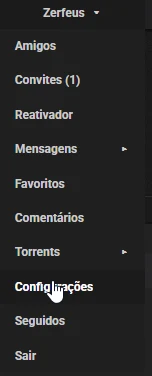
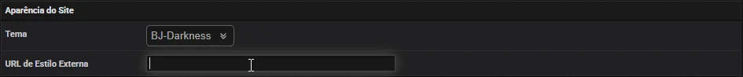

Como aplicar
Primeiro copie o link de um tema lá embaixo. Depois:
1
Abra as Configurações
No menu com o seu nome de usuário, clique em Configurações.

2
Cole o link
Em Aparência do Site, cole o link no campo URL de Estilo Externa. O campo "Tema" pode ficar como está.

3
Salve
Desça até o fim da página e clique em Salvar Configurações. Pronto: o tema já aparece na próxima página que você abrir.
Escolha seu tema
Clique na imagem para ver o tema funcionando, com menus e efeitos.
Dúvidas
Como volto para o visual normal do site?
Em Configurações, apague o link do campo URL de Estilo Externa e clique em Salvar Configurações.
Como troco de tema?
Copie o link do novo tema e cole no mesmo campo, no lugar do antigo. Depois salve.
A página ficou sem estilo, toda desconfigurada. E agora?
Confira se o link foi colado inteiro, sem espaços. Se continuar, use a versão "arquivo único" do tema: no fim do link, troque
.css por .full.css. Por exemplo, bj-zerfeus-theme-dracula.full.css.Preciso atualizar o link quando sair uma versão nova?
Não. O link é sempre o mesmo e as melhorias chegam sozinhas. Se não aparecerem logo, recarregue a página com
Ctrl + F5.Prefiro o visual original do BJ, só com a letra mais grossa. Tem como?
Tem uma versão do tema BJ-Blue original com todo o texto em negrito, para quem precisa de mais legibilidade. Use este link no mesmo campo:
Se o BJ atualizar o BJ-Blue, essa versão acompanha automaticamente.
https://dsousamt.github.io/bjshare-darkglass-theme/bj-blue-negrito.cssSe o BJ atualizar o BJ-Blue, essa versão acompanha automaticamente.
Funciona em qualquer navegador?
Funciona nas versões atuais do Chrome, Edge, Firefox, Opera, Brave e Safari, no computador e no celular.
Encontrei um problema. Onde aviso?
No tópico do tema no fórum do BJ-Share, ou abrindo uma issue no GitHub.